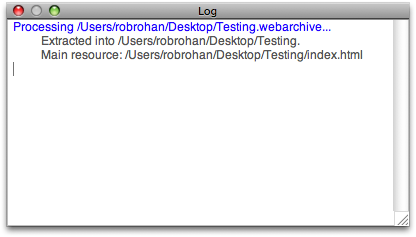

WebArchive Extractor
Introduction
WebArchive Extractor is a utility that takes Apple's WebArchive file format, and turns the file into a normal directory structure. This utility's focus is on helping you to create simple HTML pages with images using TextEdit. For example, after you create a document with images in TextEdit, you can save the file as WebArchive, use this utility to convert the file into a directory structure, and then upload the extracted directory structure to a web server. This process can be used to create help files for web applications, help files for desktop applications,s or very simple web sites.
WebArchive files can also be created by saving a web page in Safari (saving all the graphics, css, and images). You can then extract the web page locally using WebArchive Extractor.
For up to date information, please see the WebArchvie Extractor project page, or the maintainer's weblog. If you have questions or comments about WebArchive Extractor, please visit the forum.
Basic Usage
To extract an archive simply drag the web archive file onto the main window area (as seen in the picture below).

The archive file will extract to the directory that contains the web archive, and the new directory name will be the name of the web archive file without the web archive extension. For example, dragging Testfile.webarchive will create a directory named Testfile.
Preferences
There are a few settings you can use to fine tune the extraction. The settings are found by choosing WebArchive Extractor > Preferences... or by pressing ⌘, . The preferences window looks like the following picture, and we will discuss each setting below.


Log
There is a simple log that will display errors or messages during an extraction. To view the log select View > Show Log from the menu bar, or press the keys ⌘L. An example of the log window can be seen below.

Getting the Source
To get the WebArchive Extractor source code, you'll need to use the free and open source git version control system. Once you have git installed, you can clone the repository by using the following command:
$ git clone http://robrohan.com/projects/WebArchiveExtractor/repo/WebArchiveExtractor.git
Licenses
Source code: Copyright © 2007 Rob Rohan. All rights reserved.
Source code: Copyright © 2006 Vitaly Davidenko. Apple Public License
Icons: Copyright © Everaldo Coelho. Crystal Project Icons. http://www.everaldo.com GNU GPL
Sparkle Self updater: Copyright (c) 2002, Brent Simmons http://sparkle.andymatuschak.org/ MIT Like
Changes
Please note: this section will not be updated, and is only here to show past changes before the code was forked. The WebArchive Extractor source code is in a publicly available source code repository. If you are curious about the changes, please consult the repository (see the Getting the Source section).
Version 0.3 2007-09-18
Forking from the Sourceforge site by Rob Rohan. Mostly just a UI clean up and a re-release. To get the original code with the Automator task see: https://sourceforge.net/projects/webarchivext/
Version 0.2
Improves stability and addresses a number of other minor issues.
- crash on releasing of autorelease pool fixed (in NSCoreDragReceiveProc)
- main resource name changed to webarchive-index.html
- bundle identifiers changed
Version 0.1
initial release